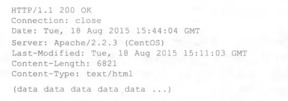
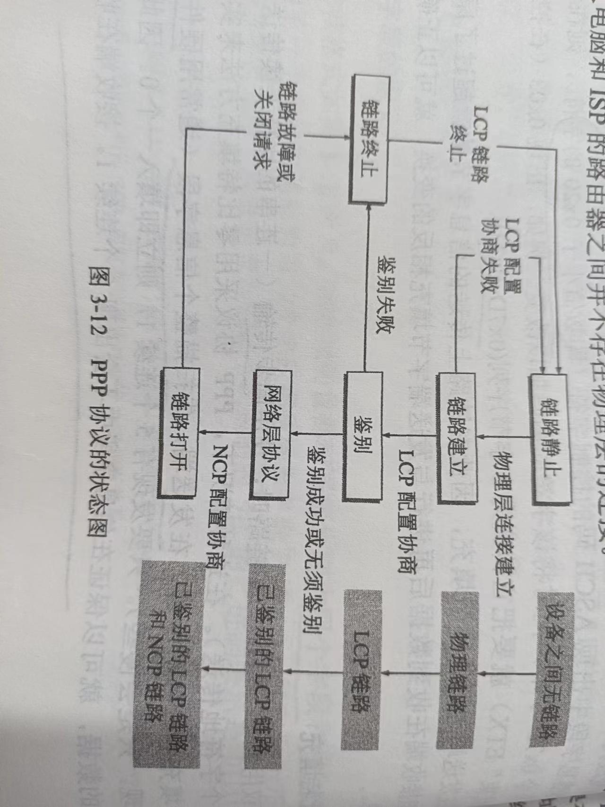
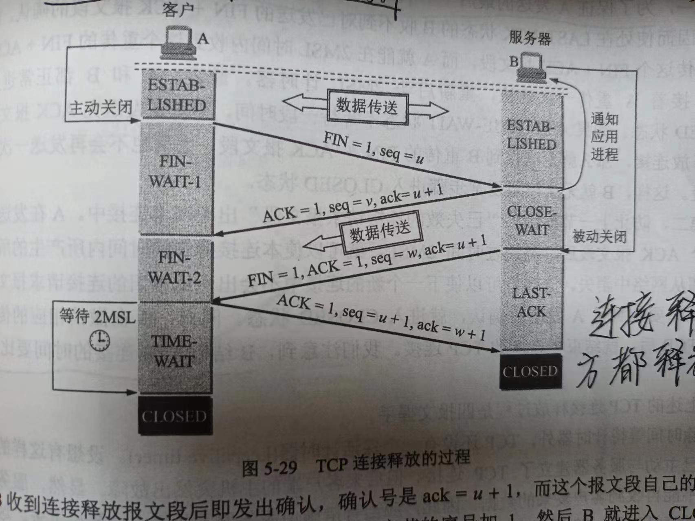

计算机网络
专用名词
第一章
边缘路由器：edge router
数字用户线：Digital Subscriber Line DSL
数字用户线接入复用器：Digital Subscriber Line Access Multiplexer DSLAM
混合光纤同轴：Hybrid Fiber Coax HFC
电缆因特网接入：cable Internet access
电缆因特网调制解调器： cable modem
电缆调制解调器端系统 ：Cable Modem Termination System CMTS
光纤到户： Fiber To The Home FTTH
主动光纤网络（Active Optical Network AON）、被动光纤网络（Passive Optical Network PON）
光纤网络端接器 Optical Network Terminator ONT
光纤线路端接器 Optical Line Terminator OLT
局域网 LAN
无屏蔽双绞线：Unshielded Twisted Pair, UTP
光载波(Optical Carrier, OC <光纤>
报文 message
分组 packet
分组交换机 packet switch
路由器 router
链路层交换机 link-layer switch
存储转发传输 store-and-forward transmission
输出缓存 output buffer
输出队列 output queue
排队时延 queuing delay
分组丢包 packet loss
转发表 forwarding table
路由器选择协议 routing protocol
频分复用 Frequency- Division Multiplexing, FDM
时分复用 Time-Division Multiplexing, TDM
带宽 bandwidth
存在点,接入点 Point of Presence ,PoP
因特网交换点 Internet Exchange Point, IXP (ISP 对等)
内容提供商网络 content provider network
流量强度 traffic intensity (排队时延)
第二章
应用程序编程接口 Application Programming Interface API
带宽敏感的应用 bandwidth-sensitive application
弹性应用 leastic application
安全套接字层 Secure Sockets Layer SSL
应用层协议 application-layer protocol
简单邮件传输协议 Simple Mail Transfer Protocol SMTP
超文本传输协议 HyperText Transfer Protocol HTTP
无状态协议 stateless protocol
持续连接和非持续连接 persistent connection non-persistent connection
往返时间 Round-Trip Time RTT
Web缓存 Web cache = 代理服务器 proxy server
内容分发网络 Content Distribution Network CDN
简单邮件传输协议 Simple Mail Transfer Protocol SMTP
域名系统 Domain Name System , DNS
顶级域 Top-Leval Domain TLD
分布式拒绝服务 DDoS
经HTTP的动态适应性流 Dynamic Adaptive Streaming over HTTP DASH
内容分发网 Content Distribution Network CND
第四章
软件定义网络 SDN Software-Defined Networking
第一章
**套接字接口（socket interface）:**规定了运行在一个端系统上的程序请求因特网基础设施向运行在另一个端系统上的特定目的地程序交付数据的方式。
协议：定义了在两个或多个通信实体之间交换的报文的格式和顺序，以及报文发送和/或接收一条报文或其他事件所采取的动作
网络边缘：
接入网：
家庭接入：DLS、电缆、FTTH、拨号和卫星
企业（和家庭）接入：以太网、WiFi

物理媒体
引导型媒体(guided media) 和 非引导型媒体(unguided media)
对于导引型媒体, 电波沿着固体媒体前行，如光缆、双绞铜线或 同轴电缆。对于非导引型媒体，电波在空气或外层空间中传播，例如在无线局域网或数字 卫星频道中。
网络核心
分组交换
源将长报文划分为较小的数据块
存储转发传输：存储转发传输是指在交换机能够开始向输岀链路传输该分组的第一个比特之前，必须接收到整个分组。
排队时延和分组丢失：输出缓冲充满
转发表和路由选择协议：
当源主机要向目的端系统发 送一个分组时，源在该分组的首部包含了目的地的IP地址。该地址具有一种等级结构.
转发表：用于将目的地址映射成输出链路
电路交换
在电路交换网络中，在端系统间通信会话期间，预留了端系统间沿路径通信所需要的 资源（缓存，链路传输速率）。
传统的电话网络是电路交换网络的例子
复用：频分复用和时分复用
网络的网络
通常用于描述一个由多个不同网络组成的更大型的网络结构。在互联网的背后，实际上是许多不同的网络（局域网、广域网、城域网等）通过路由器、交换机和其他网络设备相互连接形成的。这种层次化的结构使得数据可以在不同网络之间传输，从而实现了全球范围内的连接。
\
分组交换网中的时延、丢包和吞吐量
时延
节点处理时延、排队时延、传输时延、传播时延 –>节点总时延
传输时延和传播时延的比较
传输时延是路由器推出分组所需要的时间，它是分组长度和链路传输速率的函数，而与两台路由器之间的距离无关。另一方面，传播时延是一个比特从一台路由器传播 到另一台路由器所需要的时间，它是两台路由器之间距离的函数，而与分组长度或链路传 输速率无关。
链路带宽和链路传播速率
- 链路带宽（Link Bandwidth）： 链路带宽是指网络连接或链路能够传输的最大数据量，通常以每秒传输的比特数（bits per second，bps）来表示。链路带宽决定了网络连接的传输能力，即在单位时间内可以传输的数据量。链路带宽通常是网络设备或链路的一个属性，表示网络链路的最大数据传输速度。
- 链路传播速率（Link Data Rate）： 链路传播速率是指数据在网络链路上实际传播的速度，即数据从发送端传输到接收端所需的时间。链路传播速率受到物理链路的性质影响，包括传输介质的类型、信号传播速度和链路的长度。链路传播速率通常是链路的一个物理属性，取决于链路的特性。
吞吐量
协议层次及服务模型
第二章 应用层
用操作系统的术语来说，进行通信的实际上是进程（process）而不是程 序。一个进程可以被认为是运行在端系统中的一个程序。当多个进程运行在相同的端系统 上时，它们使用进程间通信机制相互通信。
网络体系结构：OSI模型等
应用程序系统结构：CS、P2P等
进程通过一个称为套接字（sock, el）的软件接口向网络发送报文和从网络接收报文。
一个运输层协议能够为调用它的应用程序提供什么样的服务呢？大体能够从四个 方面对应用程序服务要求进行分类：可靠数据传输、吞吐量、定时和安全性。
运输服务：TCP,UDP
TCP的加强版本，称为安全套接字层（Secure Sockets Layer, SSL） o用SSL加强后的TCP不仅能够做 传统的TCP所能做的一切，而且提供了关键的进程到进程的安全性服务，包括加密、数 据完整性和端点鉴别。
强调SSL不是与TCP和UDP在相同层次上的第三种因特网 运输协议，而是一种对TCP的加强，这种强化是在应用层上实现的
应用层协议：
- 交换的报文类型，例如请求报文和响应报文。
- 各种报文类型的语法，如报文中的各个字段及这些字段是如何描述的。
- 字段的语义，即这些字段中的信息的含义。
- 确定一个进程何时以及如何发送报文，对报文进行响应的规则。
Web和HTTP
HTTP使用TCP作为它的支撑运输协议
HTTP（Hypertext Transfer Protocol）是一种无状态（stateless）协议，这意味着每个HTTP请求都是独立的，服务器不会在请求之间保持任何状态信息。换句话说，服务器不会记住之前的请求，也不会知道用户之前的操作或状态。
- 独立请求： 每个HTTP请求都是独立的，不依赖于之前的请求。当你在浏览器中点击链接或者刷新页面时，每次请求都是一个新的请求，服务器不会知道之前的请求和响应。
- 无会话状态： HTTP是无会话状态的，这意味着服务器不会为每个客户端保持一个持久的会话。在每次请求中，服务器不会知道请求来自哪个用户，除非用户在请求中包含了识别信息，例如在URL参数中或者通过Cookie头部。
- 简化服务器： 无状态性简化了服务器的设计和维护，因为服务器不需要为每个用户保持状态信息。这使得HTTP协议非常灵活和可扩展，但也限制了它在处理某些应用场景（例如在线购物车、用户登录状态等）时的能力。
HTTP请求报文和响应报文
HTTP请求报文
HTTP请求报文的第一行叫作请求行（request line）,其后继的行叫作首部行（header line）。
请求行有3个字段：方法字段、URL字段和HTTP版本字段。
方法字段可以有：GET、POST、HEAD、PUT和DELETEO
通过包含Connection: close首部行，该浏览器告诉服务器不要麻烦地使用持续连接，它要求 服务器在发送完被请求的对象后就关闭这条连接
无状态请求：
HTTP响应报文

它有三个部分：一个初始状态行（status line） , 6个首部行（headerline）,然后是实体体（entity body）
实体体：是报文的主要部分，即它包含了所请求的对象本身（表示为data data data data data -）。
状态行：有3个字段：协议版本字段、状态码和相应状态信息。在这个例子中，状态行指示服务器正在使用HTTP/ 1.1,并且一切正常（即服务器已经找到并正在发送所请求的对象）。
首部行：服务器用Connection： close首部行告诉客户，发送完报文后将关闭该TCP连接。
Date：首部行指示服务器产生并发送该响应报文的日期和时间。这个时间不是指对象创建或者最后修改的时间，而是服务器从它的文件系统中 检索到该对象，将该对象插入响应报文，并发送该响应报文的时间。
Server：首部行指示 该报文是由一台Apache Web服务器产生的，它类似于HTTP请求报文中的User-agent:首部行。
Last-Modified:首部行指示了对象创建或者最后修改的日期和时间。Last- Modified: 首部行对既可能在本地客户也可能在网络缓存服务器上的对象缓存来说非常重要。 缓存服务器（也叫代理服务器）。
ContentLength： 首部行指示了被发送对象中的字节数。
Content-Type:首部行指示了实体体中的对象是HTML文本。（该对象类型应该正式地由Content-Type:首部行而不是用文件扩展名来指示）
状态码和相关短语

用户与服务器的交互：cookie
然而一个Web站点通常希望能够识别用户，可能是因为服务器希望限制用户的访问，或者因为它希望把内容与 用户身份联系起来。
cookie相当于用户访问Web站点，这个站点分配给这个用户的唯一标识，之后的请求Web界面，浏览器就会查询cookie文件并抽取对这个网站的识别码
Web缓存
配置用户的浏览器，使得用户所有的HTTP请求首先指向Web缓存器。一旦某浏览器被配置了，每个请求首先被定向到该Web缓存器。
用户向服务器请求，先看代理服务器里面有没有，如果没有就到初始服务器里面找。代理服务器中间代理
条件GET方法
问题：如果初始服务器内容修改过，如何判断缓存服务器里面的内容还是可用的。
当初始服务器发送一个对象到缓存服务器时，里面也包含了Last-Modified: 最后修改时间
缓存服务器会向初始服务器发送一个条件GET执行最新检查，有之前初始服务器发的Last-Modified:
初始服务器会返回一个响应报文：

因特网中的电子邮件
3个主要部分：用户代理(user agent)、邮件服务器 (mail server)、简单邮件传输协议(Simple Mail Transfer Protocol SMTP)
用户代理允许用户阅读、回复、转 发、保存和撰写报文。微软的Outlook和Apple Mail是电子邮件用户代理的例子。
一个典型的邮件发送过程是：从发送方的用户代理开始，传输到发送方的邮件服务器，再传输到接收方的邮件服务器，然后在这里被分发到接收方的邮箱中。
SMTP是因特网电子邮件中主要的应用层协议。它使用TCP可靠数据传输服务，从发送方的邮件服务器向接收方的邮件服务器发送邮件
SMTP
SMTP是因特网电子邮件的核心.
SMTP 一般不使用中间邮件服务器发送邮件,假设Alice的邮件服务器在中国香港，而Bob的服务器在美国圣路易斯，那么这个TCP连接也是从香港服务器到圣路易斯服务器之间的直接相连特别是，如果Bob的邮件服务器没有开机，该报文会保留在Alice的邮件服务器上 并等待进行新的尝试，这意味着邮件并不在中间的某个邮件服务器存留。
默认使用端口号25
邮件报文格式
每个首部必须含有一个From：首部行和一个To：
POP3
POP3是一个极为简单的邮件访问协议
在POP3的事务处理过程中，用户代理发出一些命令，服务器对每个命令做出回答。 回答可能有两种：+0K （有时后面还跟有服务器到客户的数据），被服务器用来指示前面 的命令是正常的；-ERR,被服务器用来指示前面的命令出现了某些差错。
不足：POP3协议没有给用户提供任何创建远程文件夹并为报文指派文件夹的方法。
IMAP
IMAP服务器把每个报文与一个文件夹联系起来；当报文第一次到达服务器时，它 与收件人的INBOX文件夹相关联。收件人则能够把邮件移到一个新的、用户创建的文 件夹中，阅读邮件，删除邮件等。IMAP协议为用户提供了创建文件夹以及将邮件从一 个文件夹移动到另一个文件夹的命令。IMAP还为用户提供了在远程文件夹中查询邮件 的命令，按指定条件去查询匹配的邮件。值得注意的是，与POP3不同，IMAP服务器维护了 IMAP会话的用户状态信息，例如，文件夹的名字以及哪些报文与哪些文件夹相关联
基于Web的电子邮件
使用这种服务，用户代理就是普通的浏览器，用户和他远程邮箱之间的通信则通过HTTP进行
邮件服务器在与其他的邮件服务器之间发送和接收邮件时，仍然使用的是SMTP。
DNS：因特网的目录服务
进行主机名到IP地址转换的目录服务—域名系统 DNS
DNS是：
- 一个由分层的DNS服务器实现的分布式数据库
- 一个使得主机能够查询分布式数据据的应用层协议。
- DNS运行在UDP上，使用53号端口
- 主机别名（host aliasing）有着复杂主机名的主机能拥有一个或者多个别名。例 女口，一台名为relay 1. west-coast.enterprise.com的主机，可能还有两个别名为enterprise. com 和 www. enterprise. com0 在这种’情况下,relay 1. west- coasL enterprise, com 也称为规范主机名（canonical hostname）主机别名（当存在时）比主机规范名更加容易记忆。应用程序可以调用DNS来获得主机别名对应的规范主机名以及主机 的IP地址。
分布式、层次数据库
一般来说有三种类型的DNS服务器：根DNS服务器、顶级域DNS服务器、权威DNS服务器
- 根DNS服务器。有400多个根名字服务器遍及全世界。这些根名字服务器由13 个不同的组织管理。根名字服务器的全部清单连同管理它们的组织及其中找到。根名字服务器提供TLD服务器的IP地址。
- 顶级域(DNS)服务器。对于每个顶级域(如com、org、net、edu和gov)和所有 家的顶级域(如uk、fr、ca和jp),都有TLD服务器(或服务器集群)。Verisign Global Registry Services公司维护com顶级域的TLD服务器，Educause公司维护edu 顶级域的TLD服务器。支持TLD的网络基础设施可能是大而复杂的。TLD服务器提供了权威DNS服务器的IP地址
- 权威DNS服务器。在因特网上具有公共可访问主机（如Web服务器和邮件服务器）的每个组织机构必须提供公共可访问的DNS记录，这些记录将这些主机的名 字映射为IP地址。一个组织机构的权威DNS服务器收藏了这些DNS记录。一个 组织机构能够选择实现它自己的权威DNS服务器以保存这些记录；另一种方法 是，该组织能够支付费用，让这些记录存储在某个服务提供商的一个权威DNS服 务器中。多数大学和大公司实现和维护它们自己基本和辅助（备份）的权威DNS 服务器。
本地DNS服务器（local DNS server）
DNS缓存
DNS缓存(DNS caching) o实际上，为了改善时延性能并减 少在因特网上到处传输的DNS报文数量， DNS广泛使用了缓存技术。
DNS记录和报文
TTL是该记录的生存时间，它决定了资源记录应当从缓存中删除的时间
DNS报文
nslookup程序，Windows和UNIX，命令行键入“nslookup”
P2P文件分发
单一服务器向大量主机（称为对等方）
在P2P文件分发中，每个对等方能够向任何其他 对等方重新分发它已经收到的该文件的任何部分，从而在分发过程中协助该服务器
BitTorrent
每个洪流具有一个基础设施节点，称为追踪器（tracker）。当一个对等方加 入某洪流时，它向追踪器注册自己，并周期性地通知追踪器它仍在该洪流中。
当一个新的对等方Alice加入该洪流时，追踪器随机地从参与对等方 的集合中选择对等方的一个子集（为了具体起见，设有50个对等方），并将这50个对等方的IP地址发送给Alice.Alice持有对等方的这张列表，试图与该列表上的所有对等方创建并行的TCP连接.
第一，她应当从她的邻居请求哪些块呢？第二，她应当向哪些向她请求块的邻居发送块？在决定请求哪些块的过程中，Alice使用一种称为最稀缺优先（rarest Erst）的技术。这种技术的思路是，针对她没有的块在她的邻居中决定 最稀缺的块（最稀缺的块就是那些在她的邻居中副本数量最少的块），并首先请求那些最稀缺的块。这样，最稀缺块得到更为迅速的重新分发，其目标是（大致地）均衡每个块在每个洪流中的副本数量。
分布式散列表
分布式散列表是一种简单的数据库，其数据库记录分布在一个P2P系统的多个对等方上。
课后作业
Web服务器
1 | # import socket module |
UDP ping 程序
1 | import socket |
多线程Web代理服务器
因为防火墙的原因并没有转发成功
1 | from socket import * |
wireshark
wireshark是的网络封包分析软件，简称小鲨鱼，功能十分强大。可以截取各种网络封包，显示网络封包的详细信息。
Wireshark使用WinPCAP作为接口，直接与网卡进行数据报文交换。
WinPcap（Windows Packet Capture）是一个用于Windows操作系统的网络数据包捕获库。它允许应用程序捕获和分析网络数据包，并提供了一个接口，使得开发者能够在网络上进行低级别的数据包操作。Wireshark是一个流行的网络协议分析工具，它可以使用WinPcap库来捕获网络数据包。
Wireshark使用WinPcap作为接口的作用在于：
- 数据包捕获： WinPcap提供了一个用于捕获网络数据包的接口。Wireshark可以利用这个接口在网络上捕获数据包，从而分析网络流量和网络通信。
- 支持多种网络接口： WinPcap支持多种网络接口，包括以太网、Wi-Fi、和其他类型的网络接口。Wireshark可以使用WinPcap来捕获这些接口上传输的数据包。
- 实时分析和离线分析： Wireshark可以实时地捕获网络数据包，也可以分析事先捕获并保存在文件中的数据包。通过WinPcap，Wireshark可以在实时模式和离线模式下工作。
网卡（Network Interface Card，NIC），也被称为网络适配器、网络接口卡或网卡，是一种用于计算机与计算机网络之间进行通信的硬件设备。它允许计算机通过网络与其他设备进行数据交换，使得计算机能够在局域网（LAN）或广域网（WAN）中进行通信，包括通过以太网、Wi-Fi、蓝牙等各种网络协议。
以下是网卡的主要特性和功能：
特性和功能：
- 物理接口： 网卡通常以插入计算机主板上的扩展插槽（例如PCI、PCI Express）或者集成在计算机主板上的形式存在，提供了物理接口，用于连接网络电缆或无线信号。
- MAC地址： 每个网卡都有一个唯一的硬件地址，称为MAC地址（Media Access Control地址）。MAC地址用于在网络中唯一标识网卡，确保数据包准确传递到目标网卡。
- 数据包处理： 网卡能够处理数据包，包括接收和发送数据包。接收时，网卡负责解析数据包，将数据包传递给计算机的操作系统进行处理。发送时，网卡将计算机中要发送的数据包转换为网络可以识别的格式，并将其发送到网络中。
- 协议支持： 网卡支持各种网络通信协议，例如以太网、Wi-Fi（无线局域网）、蓝牙等。不同类型的网卡支持不同的协议。
- 数据传输速度： 网卡有不同的数据传输速度，通常以Mbps（兆比特每秒）或Gbps（千兆比特每秒）为单位。传统的以太网通常是10/100/1000Mbps，而现代的网络通常支持千兆或更高速度。
- 半双工/全双工： 网卡可以支持半双工（Half-Duplex）或全双工（Full-Duplex）通信。半双工表示数据只能在一个方向上传输，而全双工则允许同时进行双向通信。
- 自适应速率： 现代网卡通常支持自适应速率，可以自动根据网络条件调整传输速度，以确保稳定的数据传输。
- 中断处理： 网卡能够触发计算机的中断，通知计算机有新的数据包到达。操作系统在收到中断信号后，会处理这些数据包。
Wireshark 的主界面包含6个部分：
菜单栏：用于调试、配置
工具栏：常用功能的快捷方式
过滤栏：指定过滤条件，过滤数据包
数据包列表：核心区域，每一行就是一个数据包
数据包详情：数据包的详细数据
数据包字节：数据包对应的字节流，二进制
说明：数据包列表区中不同的协议使用了不同的颜色区分。协议颜色标识定位在菜单栏视图–>着色规则。如下所示
Packet Details Pane(数据包详细信息)
在数据包列表中选择指定数据包，在数据包详细信息中会显示数据包的所有详细信息内容。数据包详细信息面板是最重要的，用来查看协议中的每一个字段。各行信息分别为
（1）Frame:物理层的数据帧概况
（2）EthernetII:数据链路层以太网帧头部信息
（3）Internet Protocol Version 4:互联网层IP包头部信息
（4）Transmission Control Protocol:传输层T的数据段头部信息，此处是TCP
（5）Hypertext Transfer Protocol:应用层的信息，此处是HTTP协议
显示过滤器和抓包过滤器区别：
显示过滤器用于过滤Wireshark中已经捕获的数据包，只显示符合特定条件的数据包。
抓包过滤器用于在捕获数据包之前，指定只捕获符合特定条件的数据包。
抓包过滤语法
抓包过滤器类型Type(host、net、port)，方向Dir(src、dst)，协议Proto(ether、ip、tcp、udp、http、icmp、ftp等)，逻辑运算符(&&与、||或、!非)
（1）协议过滤
比较简单，直接在抓包过滤框中直接输入协议名即可。
tcp，只显示TCP协议的数据包列表
http，只查看HTTP协议的数据包列表
icmp，只显示ICMP协议的数据包列表
（2）IP过滤
host 192.168.1.104
src host192.168.1.104
dst host192.168.1.104
（3）端口过滤
port 80
src port 80
dst port 80
（4）逻辑运算符&&与、|| 或、！非
src host 192.168.1.104 &&dst port 80 抓取主机地址为192.168.1.80、目的端口为80的数据包
host 192.168.1.104 || host 192.168.1.102 抓取主机为192.168.1.104或者192.168.1.102的数据包
！broadcast 不抓取广播数据包
显示过滤器语法
1）比较操作符
比较操作符有
== 等于、！= 不等于、> 大于、< 小于、>= 大于等于、<=小于等于
（2）协议过滤
比较简单，直接在Filter框中直接输入协议名即可。注意：协议名称需要输入小写。
tcp，只显示TCP协议的数据包列表
http，只查看HTTP协议的数据包列表
icmp，只显示ICMP协议的数据包列表
（3） ip过滤
ip.src ==112.53.42.42 显示源地址为112.53.42.42的数据包列表
ip.dst==112.53.42.42, 显示目标地址为112.53.42.42的数据包列表
ip.addr == 112.53.42.42 显示源IP地址或目标IP地址为112.53.42.42的数据包列表
（4）端口过滤
tcp.port ==80, 显示源主机或者目的主机端口为80的数据包列表。
tcp.srcport == 80, 只显示TCP协议的源主机端口为80的数据包列表。
tcp.dstport == 80，只显示TCP协议的目的主机端口为80的数据包列表。
（5）http模式过滤
http.request.method==”GET”, 只显示HTTP GET方法的。
（6）逻辑运算符为 and/or/not
过滤多个条件组合时，使用and/or。比如获取IP地址为192.168.0.104的ICMP数据包表达式为ip.addr == 192.168.0.104 and icmp
（7）按照数据包内容过滤
假设我要以ICMP层中的内容进行过滤，可以单击选中界面中的码流，在下方进行选中数据。

常见显示过滤需求
数据链路层：
筛选目的mac地址为04:f9:38:ad:13:26的数据包
eth.dst == 04:f9:38:ad:13:26
筛选源mac地址为04:f9:38:ad:13:26的数据包—-
eth.src == 04:f9:38:ad:13:26
网络层：
筛选ip地址为192.168.1.1的数据包
ip.addr == 192.168.1.1
筛选192.168.1.0网段的数据
ip contains “192.168.1”
传输层：
筛选端口为80的数据包
tcp.port == 80
筛选12345端口和80端口之间的数据包
tcp.port == 12345 &&tcp.port == 80
筛选从12345端口到80端口的数据包
tcp.srcport == 12345 &&tcp.dstport == 80
应用层：
特别说明: http中http.request表示请求头中的第一行（如GET index.jsp HTTP/1.1） http.response表示响应头中的第一行（如HTTP/1.1 200 OK），其他头部都用http.header_name形式。
筛选url中包含.php的http
数据包
http.request.uri contains “.php”
筛选内容包含username的http数据包
http contains “username”
第四章 网络层：数据平面
网络层被分解为两个相互作用的部分，即数据平面和控制平面。
这里数据平面的功能，即网络层中每台路由器的功能，该数据平面功能决定到达路由器输入链路之一的数据报如果转发到该路由器的输出链路之一
网络层功能：
- 转发。当一个分组到达某路由器的一条输入链路时，该路由器必须将该分组移动到适当的输出链路
- 路由选择。当分组从发送方流向接收方时，网络层必须决定这些分组所采用的路由或路径
课本
概述
分组交换和电路交换
物理层
数据链路层
PPP协议
PPP协议就是用户计算机和ISP进行通信时所使用的数据链路层协议，提供用户认证和管理
三个组成：
- 一个将IP数据包封装到串行链路的方法
- 一个用来建立、配置和测试数据链路连接的链路控制协议LCP(Link Control Protocol)
- 一套网络控制协议NCP(Network Control Protocol)
各字段意义：
帧首部5字节，帧尾部3字节
- 标志字段F规定 0x7E，定界符
- 地址A和控制C无实际意义
- 协议P：0x0021：PPP帧的信息字段就是IP数据报；0xC021：是PPP链路控制协议LCP的数据；0x8021：表示这个是网络层的控制数据
字节填充：（0x7D被定义为转义字符）
- 信息字段出现0x7E那么就转变成0x7D,0x5E两个字节
- 出现0x7D，那么就转变成0x7D,0x5D
- 出现ASCII码小于0x20的字符，在该字符前面添加0x7D，同时该字符也变，例如：0x03–>0x7D,0x23
零比特填充：
当有5个连续的1就在后面填入一个0（一般硬件实现，但也有软件，硬件更快）
PPP协议的工作状态：
PPPoE
PPP over Ethernet
是PPP协议能适应多种类型链路的典型例子,,PPPoE是为宽带上网的主机使用的链路层协议
宽带上网和WiFi上网：
这个说的很好理解(30 封私信 / 81 条消息) WiFi和宽带有什么区别吗？ - 知乎 (zhihu.com)
使用广播信道的数据链路层
局域网
共享信道
- 静态划分：频分复用、时分复用、波分复用、码分复用
- 动态媒体接入控制
- 随机接入
- 受控接入
以太网的两个主要标准：DIX Ethernet V2和IEEE 802.3
适配器：
适配器在接收和发送各种帧时，不使用计算机的CPU。当适配器收到正确的帧时，就使用中断来通知计算机，并交付协议栈中的网络层。计算机的硬件地址在适配器的ROM中。
区别总结：
- 可读写性： ROM是只读的，而RAM是可读写的。
- 数据持久性： ROM是非易失性的，RAM是易失性的。
- 应用场景： ROM用于存储固定的不经常变化的数据，而RAM用于存储临时需要频繁访问的数据。
重要功能：数据串行传输和并行传输的转换。
适配器和局域网是串行，适配器和计算机是并行通信。
计算机的数据通过适配器发送到局域网，适配器将其组装成帧（不使用CPU）
CSMA/CD协议
为了通信简便采取两个措施：
- 无连接，对发送的数据不编号，也不要发回确认，以太网提供的服务是尽最大努力的交付，是不可靠的交付。当检测有差错的帧，直接丢弃，是否需要重传由高层决定，比如TCP会有重传机制
- 以太网发送的数据使用曼彻斯特编码的信号
先听后发，边听边发，冲突停止，等待重发
协议要点：多点接入、载波监听、碰撞检测
检测出来碰撞是因为信号叠加超出了限定值。
单程的端到端传播时延记作：τ，最迟发现数据发生碰撞时间：2τ。
争用期：2τ，如果在这期间没有检测到碰撞，才能肯定这次发送不会发送碰撞。
基本退避时间：2τ，电磁波在1km电缆的传播时延约为5us，以太网最大的端到端时延必须小于争用期的一半（25.6us）,以太网最大的端到端长度约为5km，实际上以太网覆盖没这么大，所以会使用具体的争用时间51.2us。
具体的争用期时延是51.2us，
以太网规定最短帧长64字节，如果长度小于64字节的帧都是无效帧，由于冲突发生异常终止，64字节，512比特，也就是具体的争用期时间，所以当检测到碰撞之后就会停止发送，此时已经发送的长度是小于64字节的。
帧间最小间隔为9.6us，
使用集线器的星形拓扑：提供物理层的连接，并将数据帧从一个端口广播到其他所有端口。
信道利用率=τ/T0；T0：发送帧的时间
MAC地址
注册管理机构RA分配组织唯一标识符OUI ** 24位，厂家指派扩展标识符EUI** 24位 ， 扩展的唯一标识符EUI-48 48位。
MAC帧：
开始接收帧时，时钟不同步，会先发送7字节的前同步码和1字节的帧开始定界符
扩展以太网
网桥：有一个地址表，将收到的地址找一下看看有没有，没有就丢弃，不会向所有的端口转发这个帧
物理层：转发器
数据链路层：
最初是网桥，后面交换式集线器–以太网交换机—第二层交换机
网桥和交换机的区别：
集线器、网桥、交换机的区别（详解干货！！！） - 知乎 (zhihu.com)
集线器HUB
网桥和交换机还有一个特点：缓存
以太网交换机：多端口的网桥，无碰撞，不用CSMA/CD协议
以太网交换机的一种即插即用设备，其内部的帧交换表（地址表）通过自学习算法
对于传统的10Mbit/s的共享式以太网，若有10个用户，则每个用户占有的平均带宽只有1Mbit/s。若使用以太网交换机连接，虽然每个端口到主机的带宽还是10Mbit/s，但是总容量则100Mbit/s.
虚拟局域网：虚拟局域网VLAN，给用户提供的一种服务，会插入VLAN标签到以太网帧中
RIP使用UDP，BGP使用TCP
OSPF不依赖传输层协议，直接在IP层上运行
网络层
wireshark
1 |
|
windows命令行提示符
1 | #获取本机转发表 |
Linux控制台
1 | #获取本机转发表 |
ARP协议是IP地址到MAC地址的映射
MAC表是交换机上的端口与MAC地址的映射
协议IP规定，在互联网中所有的主机和路由器必须能接受长度不超过576字节的数据报
简单的说：路由器转发让目的地址和子网掩码进行AND操作，然后判断是否和前缀相同
多播地址：224.0.0.0-239.255.255.255
IP地址前四位1110
专用地址
- 10.0.0.0/8
- 172.16.0.0/12
- 192.168.0.0/16
TCP连接的三次握手会消耗一个序号

TCP释放连接要四次挥手，全双工的，一方释放连接是单向的，需要双方都向对方释放连接
释放连接的时候有一个2MSL（最长报文段寿命Maximum Segment Lifetime RFC793建议2分钟）
为什么必须等待2MSL:
- 为了保证A发送的最后一个ACK报文段B能够到达，有可能A发送的ACK报文段丢失，那么B收不到这个报文段的确认；
- 防止“已失效的连接请求报文段”出现在本连接中。A发送完ACK之后，等待2MSL，可以使本连接持续的时间内所产生的所有报文段都从网络上消失。这样就可以使下一个新的连接中不会出现这种旧的连接请求报文段。
信道利用率：P224
TD/(TD+RTT+TA): TD是传输时延，RTT是往返时延，TA是确认分组的传输时延
超时重传时间的选择：
TCP采用一种自适应算法，记录一个报文段发出的时间，以及收到相应确认的时间。时间差RTT。TCP保留了一个RTT的一个加权平均往返时间RTTS。
RTTS的计算：第一次测量RTT样本时，RTTS就取该RTT样本值。
新的RTTS = (1-α)*旧的RTTS + α*新的RTT样本 //α是设定的值。
超时器设置的超时重传时间RTO应略大于上面的RTTS，计算公式：
RTO = RTTS + 4 * RTTD
而RTTD是RTT的偏差的加权平均值，它与RTTS和新的RTT样本有关。当第一次测试时，RTTD的值取位测量到的RTT样本值的一半，计算公式：
新的RTTD = （1-β）* 旧的RTTD + β*|RTTS - 新的RTT样本| //β是设定的值，RTTS是新测量的